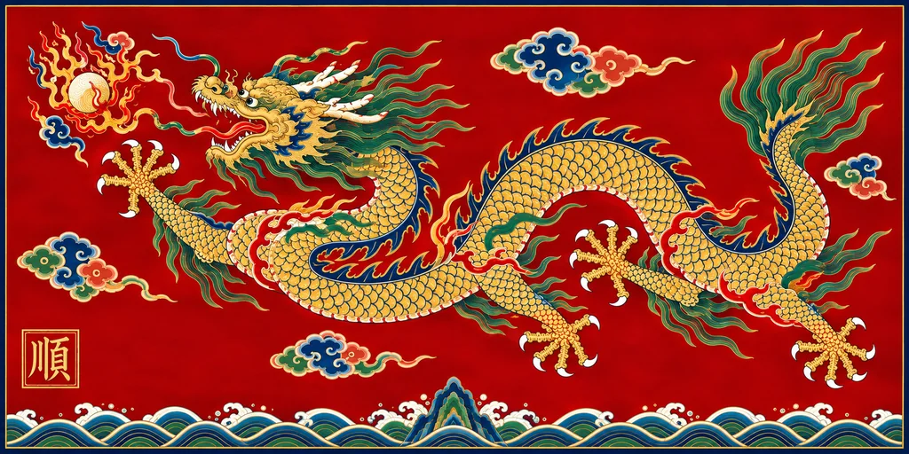

面向 Victoria 3 的架空历史 Mod，围绕十国路线、国家日志、事件与跨国危机展开。
1836 开局 · 十国路线

为十国提供 1836 入口、日志、路线、事件与政治身份。
围绕国家特色状态、战役章节与选项成本展开内容。
跨国危机由阶段条件推进，并保留中文与英文文本。
使用入口
git clone https://github.com/tangyixiao/yongchang-world.git